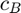
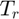
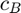
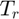

mlinearize
Obtains a continuous or discrete multilinear time-invariant state-space model, within an operating domain, of a Simulink model.
Contents
Syntax
[msys] = mlinearize(model,low_bnd,up_bnd,level,max_order)
Description
The function obtains an explicit MTI model approximation of a Simulink model using the projection approach given in [1] and sparse grid interpolation methods [2].
The function requires a continuous or discrete nonlinear model in Simulink described as
 ,
,
 ,
,
where  are the states,
are the states,  are the inputs, and
are the inputs, and  are the outputs.
are the outputs.
The model is approximated in the domain  , bounded by the intervals of the operating range of the variables
, bounded by the intervals of the operating range of the variables
![$x_{i} \in [x_{i,l},x_{i,u}], i = 1,...,n, \quad u_{j} \in [u_{j,l},u_{j,u}], j = 1,...,m, \quad y_{k} \in [y_{k,l},y_{k,u}], k = 1,...,p.$](mlinearizeDoc_eq05467637222514901516.png)
The function returns a continuous or discrete mss object as the multilinear approximation of the nonlinear model.
Requirements
Simulink
- Inputs must be loaded from workspace as time series. This can be set in the Model Settings under Data Import/Export.
- Initial conditions must be entered at each integration (continuos or discrte) blocks.
- The order of the lower and upper bounds matters. For the state order, the function prints a message with the order in which Simulink arranages the states after execution. Inputs and outputs use the same order as the models.
- Hybrid continuous and discrete models are not yet allowed.
- Simscape blocks are not allowed.
- Use of accelerator and rapid accelerator modes is not supported.
External library
- The function requires the sparse grids MATLAB kit, realse 23-5 ("Robert") or above, in the path.
Input Arguments
- model (string) - Name of the model to be multilinearized,
- low_bnd (vector) - Lower limits of the intervals for the states, inputs and outputs,

![$low\_bnd = [x_{1,l},...,x_{n,l},u_{1,l},...,u_{m,l},y_{1,l},...,y_{p,l}]$](mlinearizeDoc_eq10596613042242019169.png) .
. - up_bnd (vector) - Upper limits of the intervals for the states, inputs and outputs,
![$up\_bnd = [x_{1,u},...,x_{n,u},u_{1,u},...,u_{m,u},y_{1,u},...,y_{p,u}]$](mlinearizeDoc_eq09437035659565666622.png) .
. - level (scalar) - Level of approximation
 of the sparse grid [2]. The number of points in the grid grows polynomially in with
of the sparse grid [2]. The number of points in the grid grows polynomially in with  .
. - max_order (scalar) - Maximum multilinear order of the model (has only monomials with an order lower or equal to) [1].
Example
This example shows how to obtain a multilinear approximation from the chemical system as presented in [1].

The model represents a constant stirred tank reactor (CSTR) comprised of 4 states and 2 inputs
![$\mathbf{x} = [c_A\quad c_B\quad T_r\quad T_j]^T, \qquad \mathbf{u} = [\dot{V}/V_r\quad \dot{Q}]^T$](mlinearizeDoc_eq00741929230620249334.png) ,
,
where  and  are the concentrations of educts A and B respectively,  is the reactor temperature and
and  are the concentrations of educts A and B respectively,  is the reactor temperature and  is the temperature of the jacket.
is the temperature of the jacket.
Input  is the incoming flow
is the incoming flow  related to the volume of the reactor
related to the volume of the reactor  . Input
. Input  is the cooling power of the jacket
is the cooling power of the jacket  .
.
The equations of the model are nonlinear and are described as,  , the formulation of the equations and its parameters are presented in [1] and [3], respectively.
, the formulation of the equations and its parameters are presented in [1] and [3], respectively.
Model parameters and initial conditions are declared next.
% CSTR Initialization % Parameters alpha = 30.828; delta = 3.556e-4; Hab = 4.2; beta = 86.688; gamma = 0.1; Hbc = -11; cin = 5.1e3; Tin = 104.9; Had = -41.85; T_k0 = 107.7; % E1 = 9758.3; k10 = 1.287e12; E2 = 8560; k20 = 9.043e6; % Initial Conditions cA0 = 0; cB0 = 0; Tr0 = 105; Tj0 = 105; x0 = [cA0;cB0;Tr0;Tj0];
The model name, input functions and domanin are declared next.
% Model initialization model = 'cstr_modelTest'; % Simulation time (in hours) and input signal ts = 1e-2; t = 0:ts:1.8; t = t'; u = zeros(length(t),2); u(t>0.5 & t<1.5,1) = 2.5; u(t>=1.5,1) = 0.2; u(t>=1.5,2) = -1000; % Make sure that, in the Simulink configuration, under the % data import-export, the load from workspace is checked and % set as [t,u]. % Domain % The domain bounds follow [ca, cb, Tr, Tj, u_1, u_2, y1, y2, y3, y4], % where in this case y = x. up_bnd = [1000 750 116 116 2.5 0 1000 750 114 114]; low_bnd = [0 0 104 104 0 -1000 0 0 104 104];
The mlinearize function is now called with a level of approximation of  and a maximum multilinear order of 2. Here, make sure that the order of states in the domain bounds follow the order mlinearize printed.
and a maximum multilinear order of 2. Here, make sure that the order of states in the domain bounds follow the order mlinearize printed.
level = 6;
max_order = 2;
MLStic=tic;
[msys] = mss.mlinearize(model,low_bnd,up_bnd,level,max_order);
MLStoc=toc(MLStic);
fprintf('%.2f sec - Multilinearization\n', MLStoc)
Order of states taken by Simulink:
{'cstr_modelTest/cA_state'}
{'cstr_modelTest/cB_state'}
{'cstr_modelTest/Tr_state'}
{'cstr_modelTest/Tj_state'}
6.23 sec - Multilinearization
The models can be now compared, by letting the simulation run for the nonlinear model and using the msim function on the mss object returned from mlinearize.
% Simulations
out = sim(model);
[~,tout,xout] = msim(msys,u,t,x0);
The results can be accessed and plotted by the outputs of the function msim.
% Plots figure(1) subplot(2,2,1) plot(t,out.yout(:,1)./1000) hold on plot(tout,xout(:,1)./1000,'r') legend('Nonlinear','Multilinear') grid xlabel('Time in h') ylabel('Ca in kmol/l') subplot(2,2,2) plot(t,out.yout(:,2)./1000) hold on plot(tout,xout(:,2)./1000,'r') grid xlabel('Time in h') ylabel('Cb in kmol/l') subplot(2,2,3) plot(t,out.yout(:,3)) hold on plot(tout,xout(:,3),'r') grid xlabel('Time in h') ylabel('Tr in °C') subplot(2,2,4) plot(t,out.yout(:,4)) hold on plot(tout,xout(:,4),'r') grid xlabel('Time in h') ylabel('Tj in °C')

References
[1] Kruppa, K., Pangalos, G., and Lichtenberg, G. Multilinear approximation of nonlinear state space models. IFAC Proceedings Volumes, 47(3):9474–9479. 19th IFAC World Congress, 2014.
[2] C. Piazzola, L. Tamellini. The Sparse Grids Matlab kit - a Matlab implementation of sparse grids for high-dimensional function approximation and uncertainty quantification, ArXiv 2203.09314, 2023.
[3] T. Utz, V. Hagenmeyer, Bernd Mahn, and M. Zeitz. Nonlinear Model Predictive and Flatness-based Two-degreeof-freedom Control Design: A Comparison Evaluation in View of Industrial Application. In International Conference on Control Applications, pages 217-223. IEEE, 2006